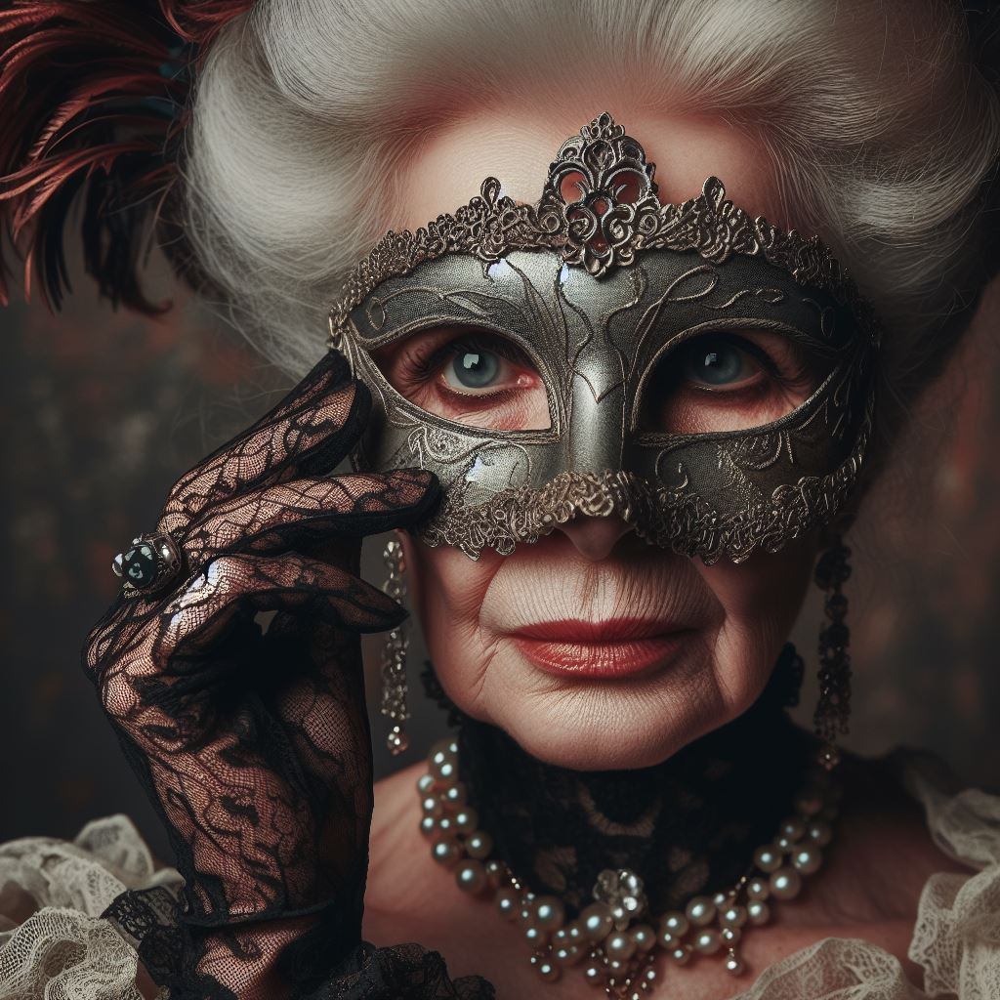

Description : Une femme gracieuse et charismatique, réputée pour sa beauté et son intelligence. Elle joue souvent le rôle d'hôtesse parfaite aux côtés de son mari.
- Motivations : Protéger sa famille et profiter de la soirée pour échapper aux pressions sociales.
- Relations : Amie proche de Miss Penelope Hastings, elle entretient une relation complexe avec Sir Arthur Montague, entre rivalité et admiration secrète.
- Secrets : Entretient une liaison passionnée avec un invité anonyme, une situation qui pourrait causer un scandale si elle était révélée.